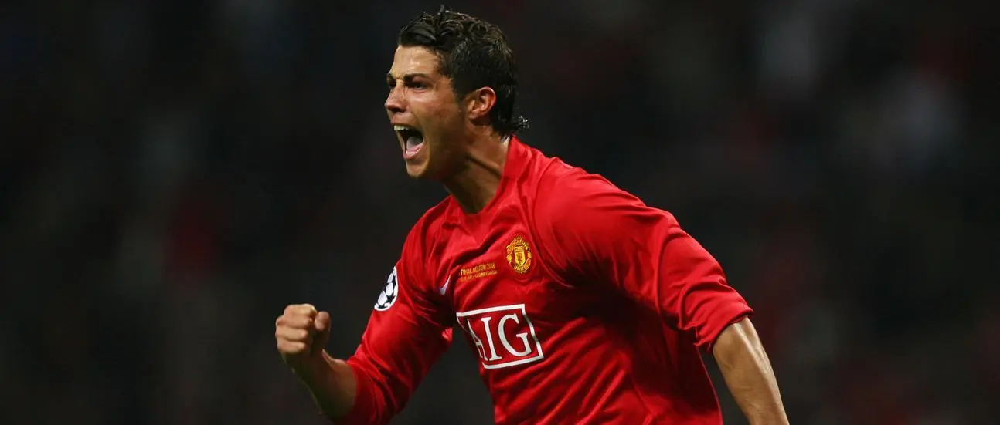
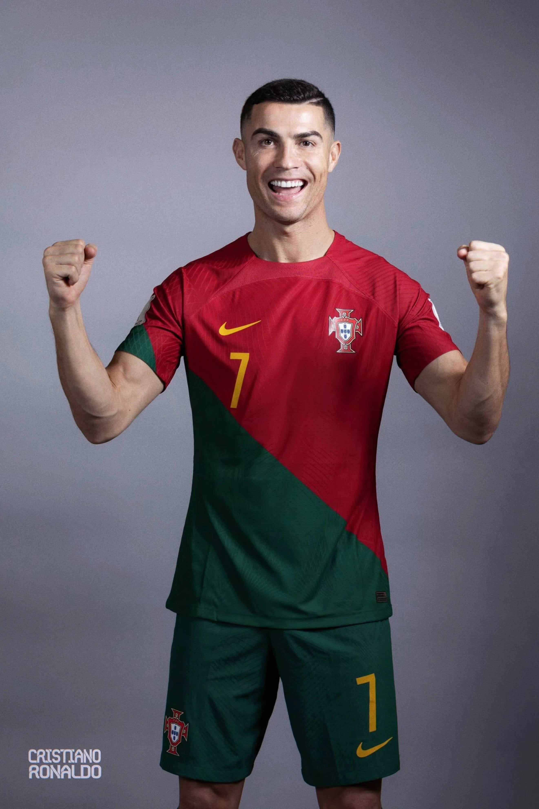

|  | ||||||
| 返回寝室首页 | 首页 | 成长经历 | 职业生平 | 重要荣誉 | 精彩瞬间 | 精神与影响力 |
足坛最璀璨的巨星，绿茵场的刺客之王 ——克里斯蒂亚诺·罗纳尔多 |
||||||
人物简介 克里斯蒂亚诺·罗纳尔多（Cristiano Ronaldo），全名克里斯蒂亚诺·罗纳尔多·多斯·桑托斯·阿维罗（Cristiano Ronaldo dos Santos Aveiro），简称 C罗，1985年2月5日出生于葡萄牙马德拉群岛丰沙尔，葡萄牙职业足球运动员，司职边锋/中锋，现效力于沙特阿拉伯职业足球联赛的利雅得胜利足球俱乐部。 1995年，C罗加入马德拉国民足球俱乐部，1996年，转入葡萄牙体育足球俱乐部青训体系。2001年，在葡萄牙体育足球俱乐部经历U16、U17、U18、二线队和一线队5个不同级别赛事 。2003年，转会曼彻斯特联足球俱乐部 ，并帮助球队夺得包含2007-08赛季欧洲冠军联赛冠军在内的10项锦标 ，个人收获2006-07赛季英格兰足球超级联赛最佳球员 、2008年金球奖、国际职业足球运动员联合会最佳球员、英超最佳球员、英超金靴等奖项 。2009年，转会至皇家马德里足球俱乐部，并在9年间帮助球队夺得包括2013-14赛季 、2015-16赛季、2016-17赛季、2017-18赛季4次欧洲冠军联赛冠军在内的16项锦标 ，个人4度荣获金球奖 。2018年，转会至意甲尤文图斯足球俱乐部 ，并随队夺得2018-19赛季、2019-20赛季意大利足球甲级联赛冠军 。2021年，重回曼联 。2022年，转会加盟利雅得胜利足球俱乐部 。
|
 |
2004年，当19岁的C罗第一次登上欧洲杯的舞台，很多人还不能适应克里斯蒂亚诺-罗纳尔多的超长姓名，只是称他为小小罗。在世界足坛的罗式族谱上，他排在大罗和小罗之后。 在揭幕战上，小小罗头球破门，一举成为葡萄牙最年轻的欧洲杯进球者。次轮他替补路易斯·菲戈出场，又给鲁伊·科斯塔送出了一脚助攻秒传。半决赛中，小小罗又以1球1助攻的数据宣告了一个追风少年的横空出世。 只可惜，那届杯赛的主题是一个神话故事，顽强的希腊人用钢铁防守捧走了德劳内杯。终场哨声响起，小小罗泪流满面。 对于一个被寄予厚望的天才来说，失败是他的必修课，是成长的试炼场。赛后，菲戈安慰小小罗的画面成为永恒的经典，而那个镜头仿佛是一场帝王权杖的交接仪式……从此，葡萄牙告别黄金一代，将国家足球的未来交给了一个未及弱冠的少年。 2008年，小小罗成了C罗，他不再是一个可以恣意哭泣的孩子。C罗手臂上缠上了象征责任与担当的队长袖标，他的身上有闪耀的单赛季42球的数据，短短四年时间，他已经从一个男孩成长为了超级巨星。 |
C罗是一位技术全面、速度快、突破力强、射门准确的攻击型球员。他的快速反击、精准传中和突破的优势让他能够几乎毫不费力地打入大量进球。除此之外，他还拥有极好的头球能力和阅读比赛局面的能力，在关键时刻总能破敌得分，多次为球队赢得胜利。 C罗的训练和比赛都极度注重细节，始终在不断努力以在保持完美状态。同时，他还尝试采用不同的战术迎战不同的对手。这种训练和比赛方法为他赢得了相当多的信任和赞扬。 |
在2008年，C罗荣获金球奖和世界足球先生奖项，并第一次赢得欧洲金靴奖。在曼联功成名就的C罗并不满足自己的愿望，希望能有更为广阔的舞台，弗格森同意了自己孩子的请求，于是2009年，他以惊人的9400万欧元转会费加盟了西班牙的皇家马德里足球俱乐部，在这里，他迎来了职业生涯的又一个巅峰，成为了世界足球最炙手可热的球员之一，他与梅西的“绝代双骄”对决，成为了足球界最引人瞩目的焦点。C罗在皇马效力9个赛季，为皇马出场438次，打进450球，成为球队历史射手王的同时帮助球队夺得西甲2冠、国王杯2冠、西超杯2冠、欧冠4冠、欧超杯2冠和世俱杯3冠，作为皇马绝对核心5年4夺欧冠（一次三连冠），个人拿到4个金球奖和4次足球先生，并荣膺3个欧洲金靴（2010-11赛季、2013-14赛季和2014-15赛季），他也因此成为了皇马历史上最伟大的球员之一。 2018年7月10日，C罗以1亿欧元转会加盟尤文图斯足球俱乐部，2020-21赛季，C罗代表尤文图斯在意甲出场33次，进29球；意大利杯出场4次，进2球；意大利超级杯出场1次，进1球；欧冠出场6次，进4球，帮助尤文夺得意大利杯冠军、意大利超级杯冠军，个人荣膺赛季意甲最佳前锋、意甲金靴（保罗·罗西奖），成为历史上第一位同时拥有英超、西甲和意甲金靴的球员。在尤文图斯效力的3年时间，C罗在各项赛事中代表尤文图斯出战134场比赛，其中意甲98场、国内杯赛13场、欧冠23场，总计打进101球，助攻22次，荣膺意甲最佳球员、意甲金靴等个人荣誉，帮助尤文图斯拿到5次冠军，其中包括2次意甲冠军、1次意大利杯冠军、2次意大利超级杯冠军。 游子回家，就如同老树在春天的复苏，新的生命在熟悉的地方重新开始。受如父亲一般的恩师弗格森召唤，2021年8月27日，C罗回到了曼联，回到了梦开始的地方。2022年3月12日，英超第30轮，曼联3:2战胜托特纳姆热刺，C罗分别于第12分钟、第38分钟、第81分钟攻入三粒进球，完成帽子戏法，并绝杀热刺。并正式超越约瑟夫·比肯，成为职业足球史上最佳射手。2022年10月9日，英超第10轮，曼联2:1战胜埃弗顿，C罗替补登场破门，这是C罗俱乐部生涯攻入的第700球，C罗也成为世界足坛首位解锁俱乐部700球里程碑的球员。同年11月22日，曼联官方宣布，C罗提前结束合同，离开曼联。 |
|---|
| 2022年12月31日，沙特阿拉伯利雅得胜利足球俱乐部宣布C罗加盟，双方签约至2025年。属于C罗的传奇仍在继续······ |